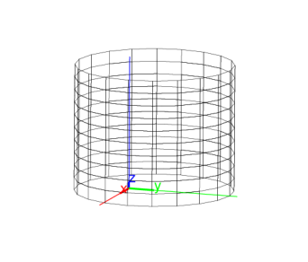

14.15.3 Cylinders: cylinder
The cylinder command creates cylinders.
-
cylinder takes three arguments:
-
A, a point.
- v, a direction vector.
- r, a real number.
- cylinder(A,v,r) returns and draws the cylinder
with axis through A in the direction v with a radius of r.
2θ.
Example
Input:
cylinder([0,1,0],[0,0,1],3)
Output:
